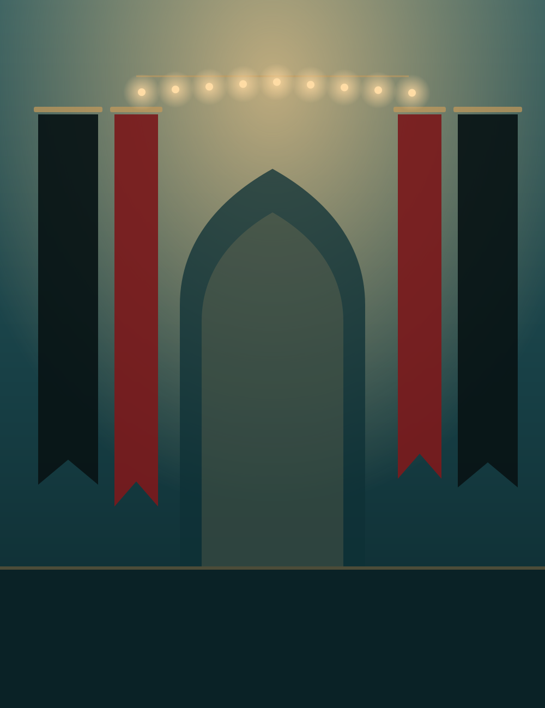
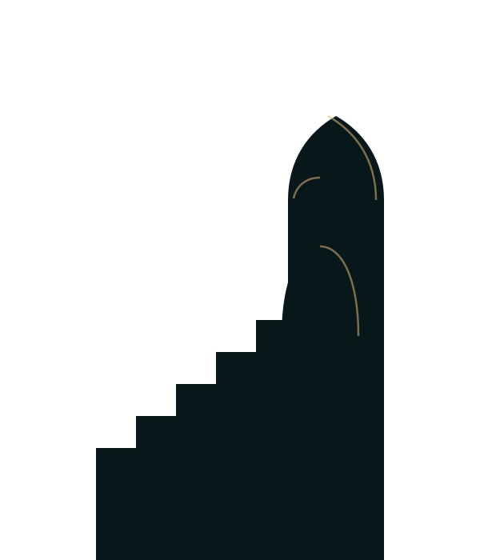

Tajweed
[level]
- Ages
- [age group]
- When (PKT)
- [days and time]
- Teacher
- [name]
- How
- In person and online
Open


Next on the calendarWinter campJanuary, for boys aged 10 to 17. [dates]

The hall, the minbar and the haze sit inside the dome from the logo. The name stands in front of the minbar, and the crowd rises in front of the name, so the headline is inside the room rather than pasted on a picture. Each layer moves at its own rate as you scroll. The date and prayer times are live.
The shapes are placeholders for one real photo, cut into layers. The brief for it is at the end of this page.
On a computer, scrolling down moves the twelve Hijri months sideways, with a gold line where today falls.
On a phone it is a simple list. The programs are a sample; the real ones will come from data/programs.js.
Today
As you scroll in, the dark rises from the bottom of the screen, a red bar drops and one sentence arrives word by word. Nothing else moves: it should feel quiet.
For the first ten nights of Muharram, the head of the institute speaks every night.
Deep teal carries the big blocks. Gold is the accent. The red from the Facebook posters is kept for Muharram and for "Live now". The light surface is a cool stone, not cream.
| Used for | Text on background | Ratio | Normal text | Large text |
|---|
Archivo, expanded and heavy for headlines, normal width for reading. One font file does both, which matters on a slow connection.
Ten nights
The year at AIAT
Find a class that fits
Winter camp for boys aged 10 to 17
Classes in Qur'an, Tajweed, Ahkam and Hawza studies, in Quetta and online for students abroad.
Some classes are taught online, so students outside Pakistan can join. Times show in Pakistan time, and one tap shows them in your own time zone.
Card details, hints under form fields, the footer.
Program names, set solid and upright to stand beside the Latin headlines.
محرمرمضانليلة القدرعيد الغدير
A timetable, not a wall of cards. Filters on top, one row per class, the seat request at the end of each row.
[level]
[level]
[level]
Photographs lead. Program names are set big over a dark fade at the foot of the photo; lectures load the video only when tapped.
1 to 10 Muharram, livestreamed
18 Dhu al-Hijjah
January, boys aged 10 to 17, [dates]
On muharram.html each night gets its own tile: the night's number in red, the topic, the date and the recording.
Labels always visible, 16px text so phones don't zoom in, and errors that say what to fix. Try sending this demo empty.
Request received
We'll reply on WhatsApp.
That didn't send
Check your connection and try again, or send it on WhatsApp instead.
Line icons on a 24px grid, written inline so there's no icon library to load. Used beside a word, never instead of one.